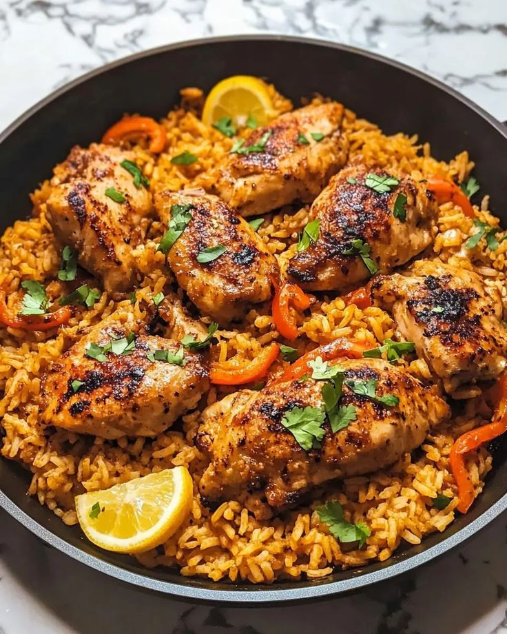

Chicken Rice

Category: Main Course
Ingredients:
- 2 cups basmati rice
- 500g chicken (cut into pieces)
- 2 tbsp oil
- 1 onion (sliced)
- 1 tomato (chopped)
- 1 tsp ginger garlic paste
- 1/2 tsp turmeric powder
- 1 tsp red chili powder
- 1/2 tsp garam masala
- 1/2 tsp cumin seeds
- 1 bay leaf
- 3 cups water
- Salt to taste
- Fresh coriander for garnish
Instructions:
- Wash and soak rice for 20 minutes. Drain and set aside.
- Heat oil in a pan. Add cumin seeds and bay leaf.
- Add onions and sauté till golden brown. Then add ginger garlic paste.
- Now add tomatoes and cook till soft. Add turmeric, chili powder, and garam masala.
- Add chicken pieces and sauté till chicken turns white and starts to cook.
- Add rice and mix gently with the chicken and masala.
- Pour in 3 cups of water. Add salt. Cover and cook till rice is done.
- Fluff gently, garnish with coriander, and serve warm with raita or pickle.
← Back to Home